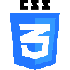
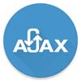

تعریف مسئله
برای اینکه درک بهتری از پروژه پیدا کنید لازم است تعریف مسئله را مطالعه کنید.
تعریف کتابخانه
کتابخانه نهادی است که با گردآوری ، سازماندهی و نگهداری دانش مدون بشر امکان رشد اندیشه ، شکوفایی استعداد و باروری ذهن خلاق انسان پویا و جستجوگر را فراهم میکند. با توجه به گسترش روز افزون علوم و فنون در زمانها و مکانهای مختلف تنها کتابخانه است که دسترسی آسان به انبوه دانش آدمی را میسر می سازد و تبادل افکار را به بار می آورد
از نظر فیزیکی میتوان تعاریف زیر را برای کتابخانه در نظر گرفت :
- کتابخانه مکانی است برای حفظ و نگهداری آثار مکتوب و غیر مکتوب که طی تاریخ تمدن بشر به وجود آمده است.
- کتابخانه مخزنی است برای حفظ مواد و منابع هنری، علمی، ادبی، اجتماعی و غیره که برر روی رسانه های مختلف ثبت و ضبط شده اند.
- کتابخانه مکانی است که انواع منابع و موارد در آن به صورت سازماندهی شده حفظ و نگهداری می شود.
- کتابخانه مکان فیزیکی است که انواع رسانه های مکتوب، دیداری، شنیداری و الکترونیکی در آن نگهداری می شود.
اما از نظر كاركردی و اجتماعی تعاریف زیر را می توان ارائه داد:
- کتابخانه نهادی است اجتماعی که سازوکار اصلی ذخیره سازی، حفاظت و اشاعه دانش و اطلاعات را فراهم می سازد.
- کتابخانه نهادی است زاده ی جامعه که در طول تاریخ تمدن در خدمت حفظ و نشر دانش بوده است.
- کتابخانه نهادی اجتماعی است که روح تمدن بشری را حفظ و نگهداری کرده است.
- کتابخانه نهادی است که کارکردهای اصلی حرفه ای کتابداری یعنی جمع آوری، سازماندهی، اشاعه و مدیریت منابع اطلاعاتی در آن انجام می شود.
- کتابخانه پلی است میان دانش مضبوط بشری بین نسل های گذشته، حال و آینده.
با تلفیق این تعاریف می توان کتابخانه را اینگونه تعریف کرد:
کتابخانه نهادی اجتماعی است که با ذخیره سازی، حفاظت و اشاعه ی پیشینه های مکتوب، دیداری و شنیداری و الکترونیکی با استفاده از خدمات کارکنان آمروزش دیده در خدمت تعلیم و تربیت و توسعه سیاسی، اقتصادی، اجتماعی، علمی و فرهنگی است.
اهداف تحقیق
همانطور که در تعریف کتابخانه گفته شد ، کتابخانه مکانی برای جمع آوری اطلاعات کتابها و منابع می باشد. و لزوماً برای جمع آوری این منابع و اطلاعات نیاز به ثبت و درج آنها در مکانی برای سهولت در دسترسی به آنها باشد.
ابزارهای به کار رفته
در این قسمت ابزارها، زبانهای برنامه نویسی، فریم ورک و تکنولوژی های به کار رفته در ایجاد نرم افزار معرفی میشوند.
php
پیاچپی (به انگلیسی: PHP) یک زبان برنامهنویسیِ شیءگرا است که برای طراحی وب توسعه یافتهاست، اما میتوان از آن به عنوان یک زبان عمومی نیز استفادهکرد. تا ژانویه سال ۲۰۱۳ میلادی پیاچپی بر روی ۲۴۴ میلیون وبگاه و ۲٫۱ میلیون سرور وب نصب شدهاست. این زبان در سال ۱۹۹۵ میلادی توسط راسموس لِردورف (به انگلیسی: Rasmus Lerdorf) ساختهشد و در حال حاضر توسعه آن بر عهده گروه پیاچپی میباشد. در ابتدا پیاچپی از عبارت صفحه خانگی شخصی (به انگلیسی: Personal Home Page) گرفته شدهبود. اما اکنون این کلمه مخففِ بازگشتی PHP: Hypertext Preprocessor به معنی پیاچپی: پیشپردازنده ابرمتن میباشد.
بیشتر بخوانید...MySQL
مایاسکیوال (به انگلیسی: MySQL) یک سامانه مدیریت پایگاه دادهها متنباز و یک پایگاه داده است، که توسط شرکت اوراکل توسعه، توزیع، و پشتیبانی میشود.
سرور مایاسکیوال به چندین کاربر اجازه استفاده همزمان از دادهها را میدهد.
Laravel

لاراول (به انگلیسی Laravel) یک چارچوب متن باز پی اچ پی (PHP) است که توسط تیلور اوتول، برای توسعه نرمافزارهای وب بر پایه معماری مدل-نما-کنترلگر(MVC) و چارچوب سیمفونی طراحی شدهاست.
بعضی از ویژگیهای لاراول به صورت ماژولار و بستهبندی شده ارائه شدهاست. در مارس ۲۰۱۵، لاراول به عنوان معروفترین فریم ورک php شناخته شد.کدهای باز لاراول بر روی گیتهاب میزبانی میشود و تحت لیسانس MIT License ارائه شدهاست.
html
زبان نشانهگذاری ابرمتنی یا زنگام یا اچتیامال، HTML یا HyperText Markup Language در کنار سیاساس هستهٔ فناوری ساخت صفحههای وب هستند. اچتیامال زبان توصیف ساختار صفحههای وب است. زبانیاست برای نشانهگذاری ابرمتن (فرامتن) که برای تدوین قالب و طراحی صفحههای وب به کار میبرند. دستورالعملهای این زبان، برچسب (Tag) نام دارند که محتوای یک صفحهٔ وب، با آنها، نشانهگذاری شده و بدینترتیب، نحوهٔ نمایش آن صفحه برای مرورگرهای وب، توصیف میشود. تاکنون ۵ نسخه از اچ تی امال عرضه شدهاست.
هر یک از برچسبهای اچتیامال، معنا و مفهوم خاصی دارند و تأثیر مشخصی بر محتوا میگذارند؛ مثلاً برچسبهایی برای تغییر شکل ظاهری متن، نظیر درشت و ضخیم کردن یک کلمه یا برقراری پیوند به صفحات دیگر در اچتیامال تعریف شدهاند.
یک سند اچتیامال، یک پروندهٔ مبتنی بر متن (Text–based) است که معمولاً با پسوند .htm یا .html نامگذاری شده و محتویات آن از برچسبهای اچتیامال تشکیل میشود. مرورگرهای وب، که قادر به درک و تفسیر برچسبهای اچتیامال هستند، تکتک آنها را از داخل سند اچتیامال خوانده و سپس محتوای آن صفحه را نمایانسازی (Render) میکنند.
اچتیامال زبان برنامهنویسی نیست، بلکه زبانی برای نشانهگذاری ابرمتن است و اساساً برای ساختمند کردن اطلاعات و جدایش اجزای منطقی یک نوشتار — نظیر عناوین، تصاویر، فهرستها، بندها و جداول — به کار میرود. از سوی دیگر، اچتیامال را نباید به عنوان زبانی برای صفحهآرایی یا نقاشی صفحات وب به کار بُرد؛ این وظیفه اکنون بر دوش فناوریهای دیگری همچون سیاساس است
css
سیاساس (به انگلیسی: CSS: Cascading Style Sheets) در کنار اچتیامال هستهٔ فناوری ساخت صفحههای وب هستند. سیاساس روشی ساده برای نمایش چیدمان و جلوههای تصویری (مانند نوع قلم، رنگ و اندازهها) بر صفحههای وب است. سیاساس از جنس زبانهای نشانهگذاری، با ساختار متن سادهٔ رایانه هستند و درون هرکدام، دستورهایی آبشار مانند و پیدرپی، برای چگونگی نمایش هر صفحه وب افزوده میشود. به گفتهای سادهتر، این دستورها روش نشان داده شدن قلمها و اندازهشان، رنگها و پس زمینهها، روش چیدمان موزاییکهای دربرگیرنده دادهها (دیوارهها)، و بسیاری دیگر از عنصرهای ساختار هر صفحه وب را، درون خود جای میدهند.
بیشتر بخوانید...JavaScript
جاوااسکریپت، به اختصار JS (به انگلیسی: JavaScript) زبان برنامهنویسی سطح بالا، پویا، مبتنی بر شی، وابستگی کم به نوع (Weakly typed)، چند رویه و تفسیری است. در کنار HTML و CSS، جاوااسکریپت یکی از سه هسته صفحات دنیای وب میباشد.
JavaScript به صورت «جاواسکریپت» خوانده میشود، ولی در فارسی به صورت «جاوااسکریپت» ترجمه میشود و اگر به صورت «جاوا اسکریپت» ترجمه شود اشتباه است چون دو کلمه جدا از هم نیست و اگر به صورت دو کلمه جدا نوشته شود خطاهای نگارشی ایجاد میشود، بهطور مثال ممکن است کلمه جاوا در انتهای خط و کلمه اسکریپت در ابتدای خط بعدی نوشته شود.
علیرغم اشتباه عمومی، زبان جاوااسکریپت با زبان جاوا ارتباطی ندارد، اگر چه ساختار این زبان به سی پلاس پلاس (++C) و جاوا شباهت دارد که این امر برای یادگیری آسان در نظر گرفته شدهاست. از همین رو دستورهای متداول مانند if, for, try..catch ,"while" و… در این زبان هم یافت میگردند.
این زبان میتواند هم به صورت ساخت یافته و هم به صورت شی گرا مورد استفاده قرار گیرد. در این زبان اشیاء با اضافه شدن متدها و خصوصیات پویا به اشیاء خالی ساخته میشوند، بر خلاف جاوا. بعد از ساخته شدن یک شی به روش فوق، این شی میتواند به عنوان نمونهای برای ساخته شدن اشیاء مشابه مورد استفاده قرار گیرد.
به علت این قابلیت زبان جاوااسکریپت برای ساختن نمونه از سیستم مناسب میباشد.
کاربرد گسترده این زبان در سایتها و صفحات اینترنتی میباشد و به کمک این زبان میتوان به اشیاء داخل صفحات HTML دسترسی پیدا کرد و آنها را تغییر داد. به همین علت برای پویانمایی در سمت کاربر، از این زبان استفاده میشود
Bootstrap
بوتاسترپ مجموعهای برای ساخت ظاهری وب سایتها و برنامههای وب است.
و یکی از محبوبترین فریم ورکهای css میباشد که از شیوه گرید بندی برای چیدمان صفحات وب استفاده میکند.بوتاسترپ شامل تمپلتهای طراحی اچتیامال و سیاساس محور برای typography، فرمها، دکمهها، نمودارها، اجزاء راهبری و دیگر اجزاء رابط کاربری و الحاقات اختیاری (JavaScript Extensions)، میباشد. بوتاسترپ محبوبترین پروژه در GitHub است که توسط NASA و MSNBC و دیگر سایتهای مطرح استفاده شده است. با استفاده از اطلاعات رابط برنامهنویسی (API) در بوت استرپ میتوان اجزاء واسط پیشرفته مانند scrollspy و تکمیل کننده خودکار کلمات (typeahead) را بدون نیاز به نوشتن حتی یک خط کد جاوا اسکریپت ایجاد نمود. بهترین نکته بوت استرپ این است که متن باز بوده و به صورت رایگان قابل دانلود و استفاده میباشد.
ajax
اِیْجکس (AJAX؛ سرواژهٔ Asynchronous JavaScript And XML)، مجموعهای از استانداردها و فناوریهای وب است که به کمک آنها میتوان برنامههایی مبتنی بر وب تولید کرد که به آسانی با کاربران تعامل داشته باشند. با استفاده از این فناوریها و با کمک انتقال تکههای کوچک داده و اطلاعات از رایانهٔ خادم (Server)، صفحات وب از حالت منفعل خارج میشوند و واکنشهایی مناسب با رویدادها انجام میدهند. ایجکس معماری جدیدی برای برنامههای تحت وب است، که با سرعت بسیار زیادی در حال گسترش بوده، و کمتر کاربری در اینترنت است که هنوز گذرش به یکی از صفحاتی که با این معماری ساخته شدهاند نیفتاده، و از قابلیتهای فوقالعاده آن بهرهمند نشده باشد. Gmail, Google Map, Google Suggest, Orkut، و اسامی آشنای دیگر، نمونههایی هستند از کاربرد ایجکس. با استفاده از این معماری، صفحات وب تعامل بسیار خوبی با کاربران خواهند داشت. بعلاوه، مهمترین مزیت این معماری این است که دیگر برای انجام هر کاری، لازم نیست صفحه وب دوباره بارگذاری شود.
بیشتر بخوانید...jQuery
جِیکوئری (به انگلیسی: jQuery) یک کتابخانه جاوااسکریپت سبکوزنِ چند مرورگری است که برای ساده سازیِ نوشتنِ اسکریپ هایِ سمت-مشتری یا به عبارتی سمت Client، در صفحات وب طراحی شده و امروزه محبوبترین کتابخانهٔ جاوااسکریپتِ در حال استفاده است.
جی کوئری نرمافزار متنباز و رایگان است که تحت پروانه "MIT" منتشر میشود. ساختار کتابخانه جِیکوئری به گونهای طراحی شدهاست که دسترسی به عناصر صفحه را آسانتر کرده باشد. میتوان با آن حرکات انیمیشن ایجاد و از رویداد (به انگلیسی: Event) های صفحه استفاده کرد و به وسیله آن میتوان نرمافزارهای مبتنی بر ایجکس (به انگلیسی: Ajax) را ایجاد و توسعه داد.
جیکوئری همچنین این اختیار را به برنامه نویسان میدهد که افزونههایی برای این کتابخانه جاوااسکریپت ایجاد کنند. جدا از اینها، جیکوئری به توسعه دهندگان این اختیار را میدهد که تکه برنامههای سطحِ پایینِ مبادلهای (ارتباط مرورگر با کاربر) یا انیمیشنی و حتی افکتهای پیشرفته و سطح بالا و اشیاء فرضی را ایجاد کنند. بهکارگیری همهٔ این اجزای جیکوئری کمک میکند تا صفحات وب قدرتمند و داینامیک (پویا)، راحتتر ایجاد شوند.
Composer
کامپوزر(به انگلیسی: Composer) یک سامانه مدیریت بسته برای زبان برنامهنویسی php است. که قالب استاندارد برای مدیریت وابستگیها و کتابخانهها در php فراهم میکند. کامپورز توسط Nils Adermann و Jordi Boggiano (شخصی که توسعه پروژه را ادامه داد)توسعه داده شدهاست.
کامپوزر به شدت از ان پی ام نود.جیاس و bundler روبی الهام گرفتهاست.
کامپوزر توسط واسط خط فرمان اجرا میشود و وابستگیها را برای برنامه نصب میکند. همچنین به شما این امکان را میدهد که بستههای موجود در Packagist را نصب کنید.
کامپوزر به عنوان بخش جداناپذیزی در بسیاری از پروژهها php مثل لاراول استفاده شدهاست.
Git
گیت (به انگلیسی: Git) یک نرمافزار کنترل نسخه و از مدل نرمافزارهای آزاد و متنباز برای بازنگری کد منبع توزیع شده و مدیریت منبع کد است که برای دنبال کردن تغییر فایلهای کامپیوتری و دنبال کردن کارهای انجام شده روی آنها توسط افراد مختلف است. هدف اولیه این نرمافزار برای استفاده در پروژههای نرمافزاری بودهاست ولی میتوان از آن تنها برای دنبال کردن تغییر فایلها هم استفاده کرد.
گیت ابتدا برای توسعهٔ لینوکس توسط لینوس تروالدز به وجود آمد و اکنون پروژههای فراوانی از آن الهام گرفتهاند. هر دایرکتوری کاری در گیت یک مخزن کامل با تاریخچهٔ کامل تغییرها و قابلیت بازنگری آنها است و برای کار با آن نیازی به دسترسی به شبکه یا سرور مرکزی وجود ندارد.
گیت یک نرمافزار آزاد است که تحت عنوان جیپیال نسخه ۲ توزیع شدهاست.
از ۲۶ ژوئیه ۲۰۱۵ جونیو همنو مسئول نگهداری از پروژهٔ گیت است.